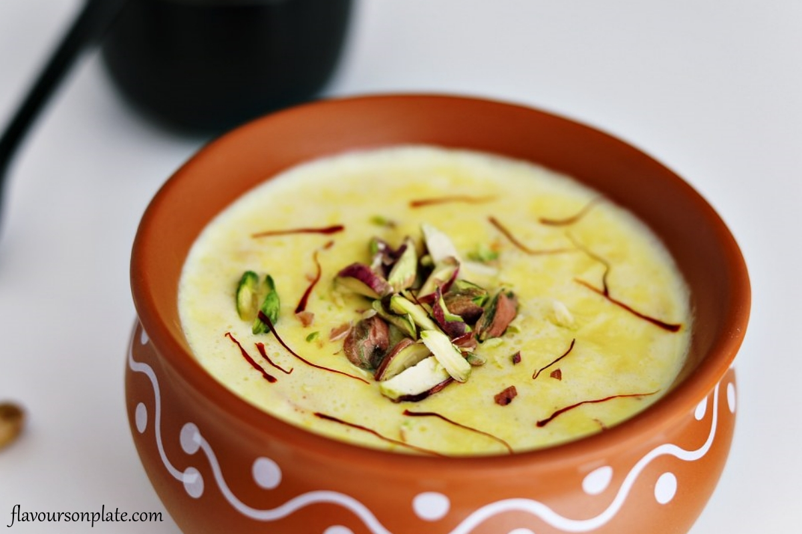

Rabdi is the simplest Indian dessert which is made by simmering the milk on low heat until it reduces to 1/3rd to 1/4th of it’s original volume.
It’s often flavored with nuts, cardamom, saffron and served in earthen clay pots.
Rabdi or rabri in simple words in just reduced milk with malai (cream). It’s usually made with whole milk which is simmered on low heat for a long time until it reduces to 1/3rd or 1/4th of it’s original volume. As you can imagine this takes time, so rabdi is definitely not a dessert which you can whip up in 15 minutes! It’s then sweetened with sugar and flavored with saffron, cardamom, rose etc. It’s also usually has lots of nuts added to it. There are several shot cut methods of making rabdi, using ricotta cheese, using condensed milk and there’s nothing wrong with those. However if you want the real taste of rabdi, then really there’s no easy way. The thickened milk has a different aroma and flavor of it’s own and you cannot get that with these “cheat” recipes. Honestly, I don’t find making rabdi a very tedious process mostly because I make it on the side when I am doing something else. So, the other day when I was making rabdi, I actually made my entire lunch, organized my pantry and all this while rabdi was cooking on the side. If you club it with something else, then the process doesn’t feel that long. You only need to stir in once in 10 minutes or so.
Add whole milk (we are using 1.5 liters/6 cups milk here) to a heavy bottom pot on medium heat.
Once it becomes little warm, take 1-2 tablespoons of milk from the pot and add it to a separate bowl/container. Now take a pinch of saffron strands, crush between you palm and add it to the warm milk. Set aside.
Meanwhile add nuts to a pan of water and let it heat up. Let the nuts remain in hot water for 15 minutes while you are working on the recipe. And once 15 minutes are up, then remove the skin and chop/slice the nuts. I have used only almonds here, you can use cashews, pistachios etc.
Back to the milk now, let the milk come to a gentle boil. And once it has come to a boil, reduce the heat to medium-low.
Let the milk simmer on low heat, do not stir and after 5 minutes or so you will notice that layer of cream (malai) will start forming on top of the milk. With a spatula or spoon, pick this cream top and stick it to the sides of the pan. You can then give a gentle stir to the milk and then let it simmer again.
Keep doing this process of collecting the cream top and sticking it to the sides as the milk simmers. Do this every 10 minutes or so when the cream forms, and do not stir it in between. Because if you stir then the cream top won’t form.
On another note- if you want a smooth rabdi, then keep stirring the milk often and don’t do this step of sticking the cream to the sides.
After around 35 minutes (from the time it came to a boil), the milk has reduced to half (3 cups). At this point add in the sugar and mix.
Also add the prepared saffron milk that we had prepared earlier. Stir and continue to simmer the milk and collect the cream top on the sides.
After additional 30-40 minutes, the milk has now reduced to 1/3rd of it’s original volume (total time taken from the point it started boiling to reach this stage was 1 hour 20 minutes). At this point add chopped nuts.
Also add cardamom powder and rose water and stir.
Now scrape all the malai (cream) from the sides using a spatula that you had collected all this while and mix it with the reduced milk.
Remove pot from heat and rabdi is now ready. As you can see the final volume of the rabdi was 2 cups (we started with 6 cups). If you want, you can even reduce it further to 1/4th of it’s original volume which will be 1.5 cups.
Chill the rabdi and garnish with more nuts before serving!